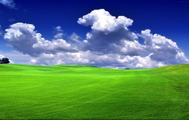
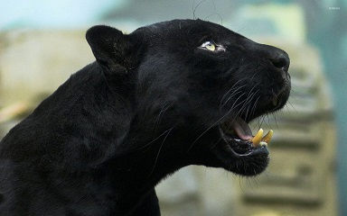

SNAP!!!
If you are searching for some good photography website
Then you have come to the right place my dear friend.
You can have a look to some of our professional photographs at
"Our work".
Photography is the art, application, and practice of creating durable images by recording light, either electronically by means of an image sensor, or chemically by means of a light-sensitive material such as photographic film. It is employed in many fields of science, manufacturing (e.g., photolithography), and business, as well as its more direct uses for art, film and video production, recreational purposes, hobby, and mass communication.
Typically, a lens is used to focus the light reflected or emitted from objects into a real image on the light-sensitive surface inside a camera during a timed exposure. With an electronic image sensor, this produces an electrical charge at each pixel, which is electronically processed and stored in a digital image file for subsequent display or processing. The result with photographic emulsion is an invisible latent image, which is later chemically "developed" into a visible image, either negative or positive depending on the purpose of the photographic material and the method of processing. A negative image on film is traditionally used to photographically create a positive image on a paper base, known as a print, either by using an enlarger or by contact printing.

Nature photography is a wide range of photography taken outdoors and devoted to displaying natural elements such as landscapes, wildlife, plants, and close-ups of natural scenes and textures. Nature photography tends to put a stronger emphasis on the aesthetic value of the photo than other photography genres, such as photojournalism and documentary photography.
"Nature photography" overlaps the fields of—and is sometimes considered an overarching category including -- "wildlife photography," "landscape photography," and "garden photography".
Wildlife photography is all about capturing animals in their natural habitats. The animals are often photographed in action, such as eating, fighting, or in flight. Alternatively, more static portraits may be used to show detail of the animal or to depict it in its environment. Captive or controlled animals are often photographed instead of true wild specimens, although it is arguable as to whether this constitutes true wildlife photography. The world's largest photography organizations, the Photographic Society of America, the Fédération Internationale de l'Art Photographique and the Royal Photographic Society have agreed on a definition for nature and wildlife photography that will be applied to photography competitions.
Wildlife photography is all about capturing animals in their natural habitats. The animals are often photographed in action, such as eating, fighting, or in flight. Alternatively, more static portraits may be used to show detail of the animal or to depict it in its environment. Captive or controlled animals are often photographed instead of true wild specimens, although it is arguable as to whether this constitutes true wildlife photography. The world's largest photography organizations, the Photographic Society of America, the Fédération Internationale de l'Art Photographique and the Royal Photographic Society have agreed on a definition for nature and wildlife photography that will be applied to photography competitions.

COPYRIGHT ©www.flawlessframes.com. All rights reserved!
Contact us :- 8740496275, 9846671952
Email : fframes1144@gmail.com
To know more about photography, check the below link in the description.